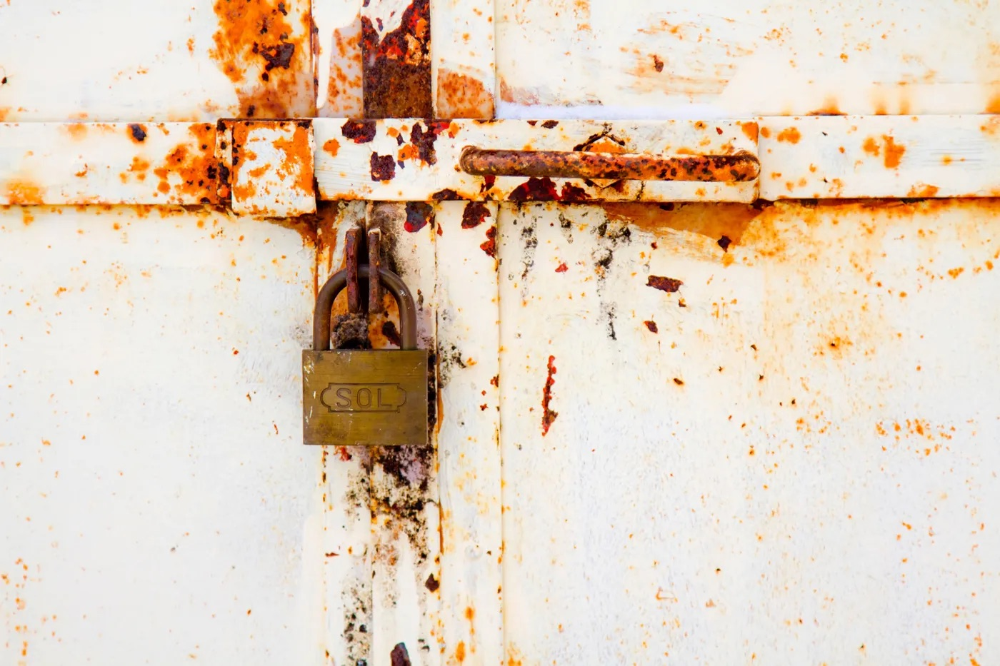
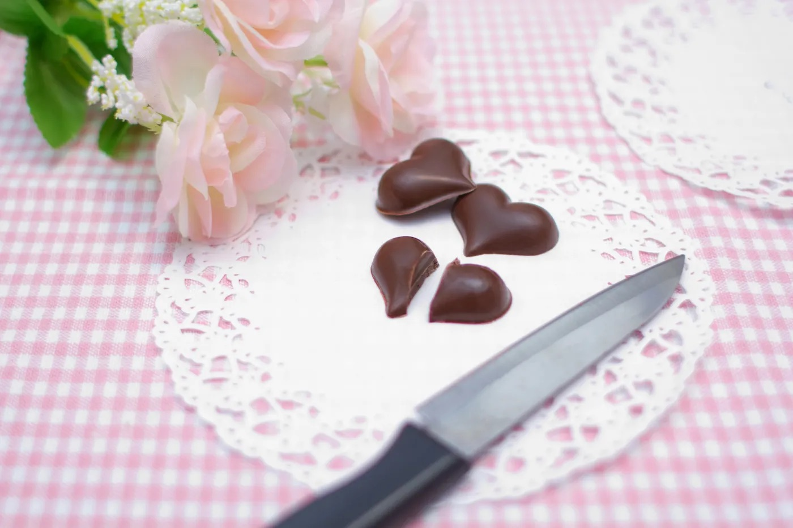
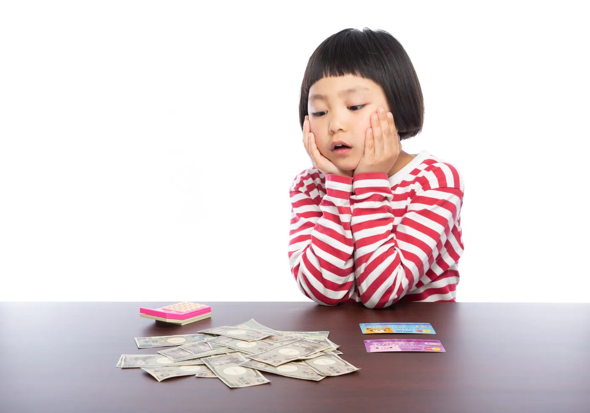
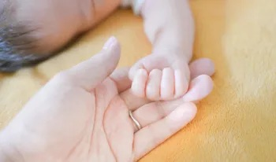

毒親との向き合い方
7/07 2022
カテゴリー：ブログ/イラストの哲学
▲１.人生における一番の壁は親
よく、両親が反対してその道に進めないというような話を聞きます。
でも、いうことなんて聞く必要はないです。絶対に。談言します。（学校に行かなくていいとかではないですよ(￣▽￣;)！）
なぜなら、親は、子どもが大人になったらどうなるかなんて考えていないからです。
親という生き物は傲慢で愚かなので、子どもが自分のいうことを聞かないと不機嫌になり、脅してきます。事実です。
子どもの将来とかではなく、自分の欲求を満たすために色々言ってくるのです。子どものことなんて考えてません。100%そう言えます。
これも良く聞く話ですが、カッとなって『出ていけ』といってしまったと言い訳する親もいますが、それが子どものことなんて、物とか、所有財産程度としか考えていない証拠です。いざとなれば、子どもなんてどうとでもなると思っているわけです。
ぜひ、参考にしてください 。
▲２.やりたいことはうちに秘めておくこと

うちの両親がそうだったのですが、私が漫画好きだと知ったら家中の漫画をゴミ箱へ送り、本好きになれば、それも処分しました。いわゆる、精神攻撃ですね。
私のことはどうでもいいのですが、同じような経験をしている学生がいたらぜひ、手遅れにならないうちに読んでください。
典型的な毒親というのは、愛情が深すぎるか、子どもが憎いか、どちらかです。
今回は、私の場合の『子供が憎い』場合の対策を考えます。参考にしてください。
▲３.親の『いつかできる』『いつでもできる』の甘い罠。

私が子どもの頃よく言われたことですが、漫画なんて大人になったらいつでも読めるから我慢しろという言葉。信じたのは馬鹿だったと今でも思います。
ナルトも当時はよく分からずにいましたし、流行っている作品もあまり分かりませんでした。絵描きを目指す人間として致命的です。なので、私は普通のイラストは諦めて、初めはデザイン系イラストに専念しました。
当然、アニメも漫画も見たことがなかったので、高校を卒業しても、『ワンピース』は少女漫画だと（本気で）思っていました。可笑しいですよね。
漫画やアニメーションは絵を描くのに結構役立ちますから(´ｰ｀)見ておいた方がいいです。
△親は『出る杭は打つ』思考！信用も相談もしない方がいい

経験から言って、確実に信用できない。
何度も書きますが、親には、あなたが将来どうなるかなんて関係ありません。なので、何かを理不尽に制限されたりする筋合いはないです。
アレはダメだ。これはいい。などと偉そうにいうクセに、その結果には責任を持たないのが親なのです。
なので、本当にやりたいことがあれば、どんなことを言われようとも、何をされようとも引き下がるべきではありません。
人生をかけてやりたいことがあれば、黙っておくのが一番だと思います。それを知ったら、親はかならず潰しにきますから。
▲4.結論：大切なことは自分で決めよう

▲ こういうプロパガンダに騙されないように。親なんて偉くも何ともない。
特に毒親だった場合もそうですが、自分のやりたいことや目指すものは黙っておくのが賢明です。
隠しておくのが一番です。
例えばデザインをしたいとして、それを親にわざわざいう必要はないです。
育ててもらってるで悩むのはナンセンスです。それこそ、当たり前のことですから。
親には本当に気をつけた方がいいです。何でも言うとおりにしていると、後で泣くことになります。
家庭環境にお悩みのイラスト戦士は、ぜひぜひ参考にしてください！
ではではヽ(´ー｀)！